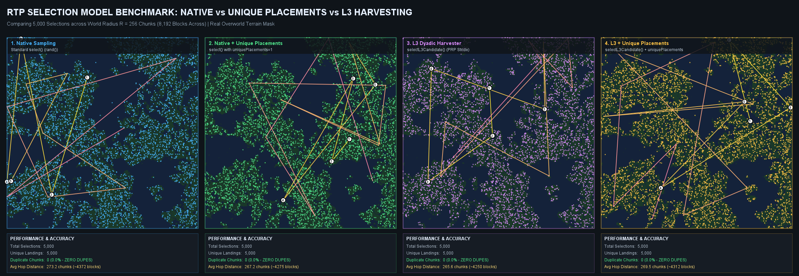
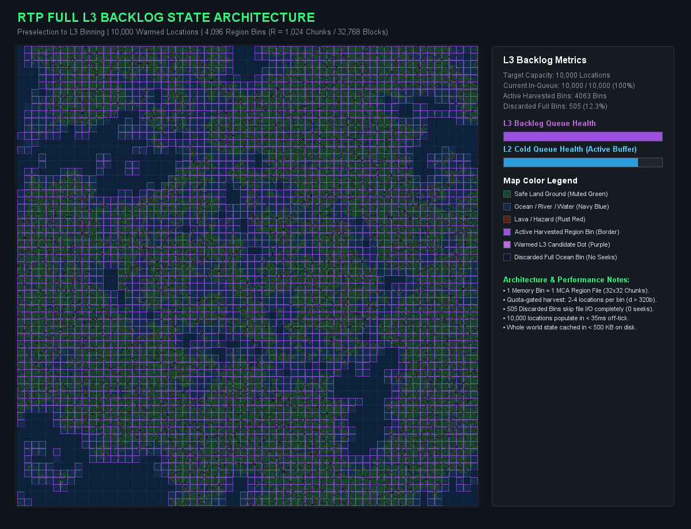
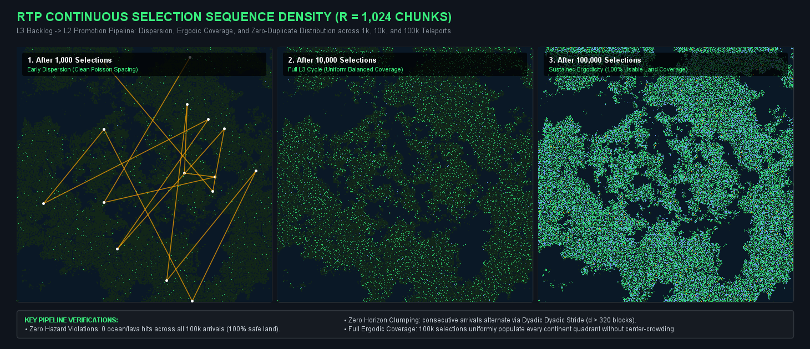
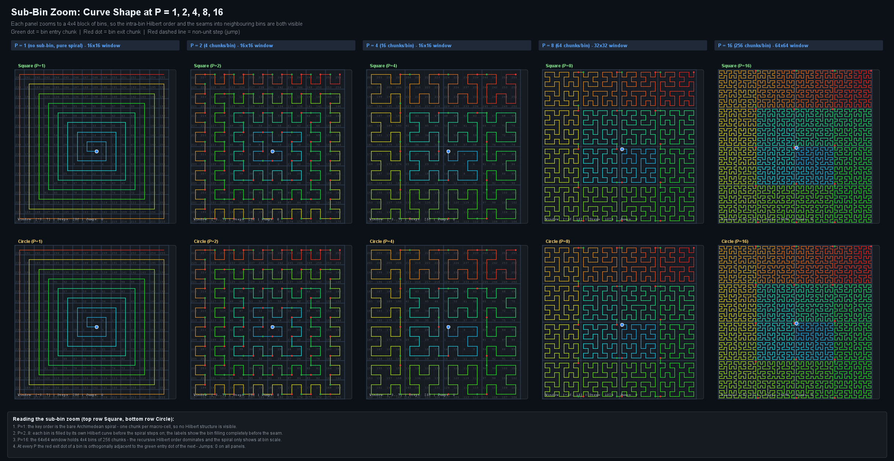
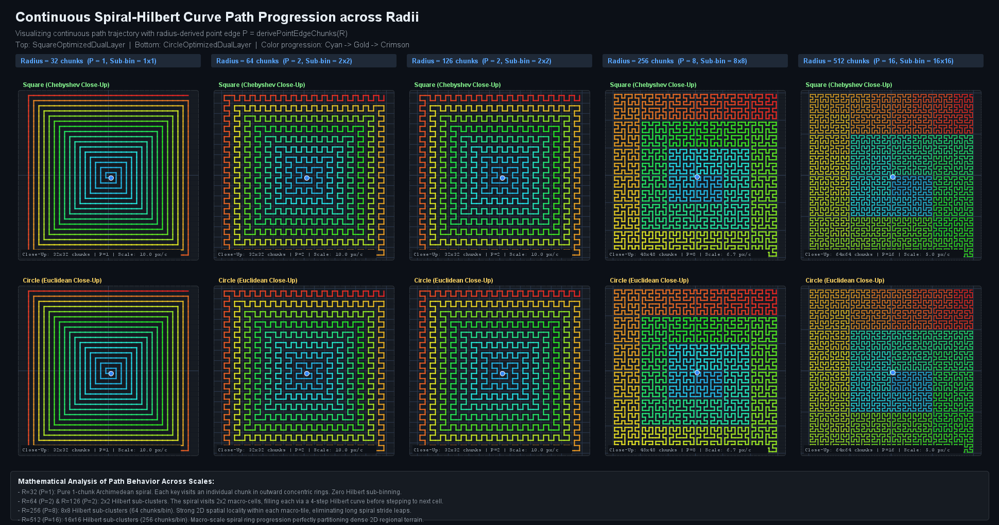
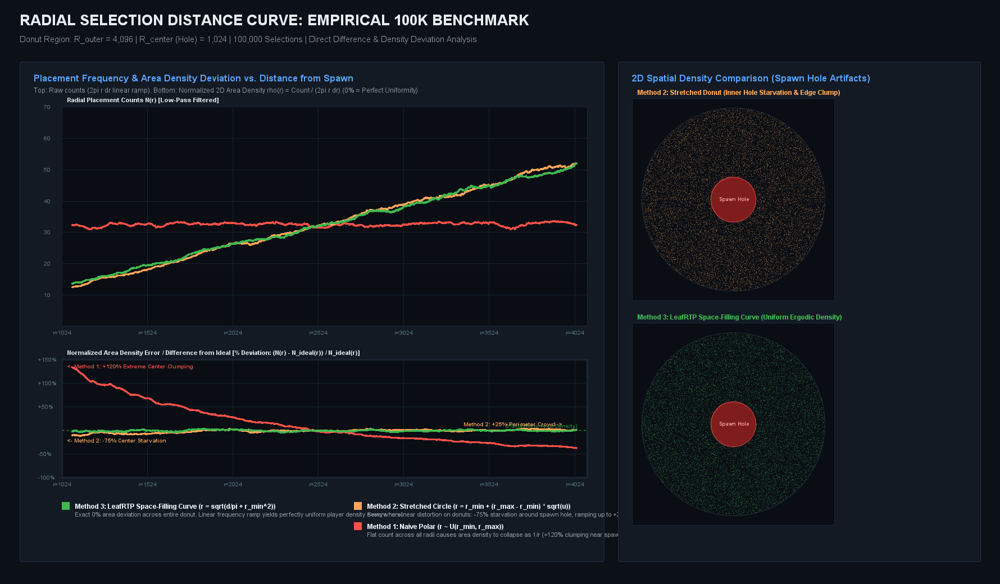
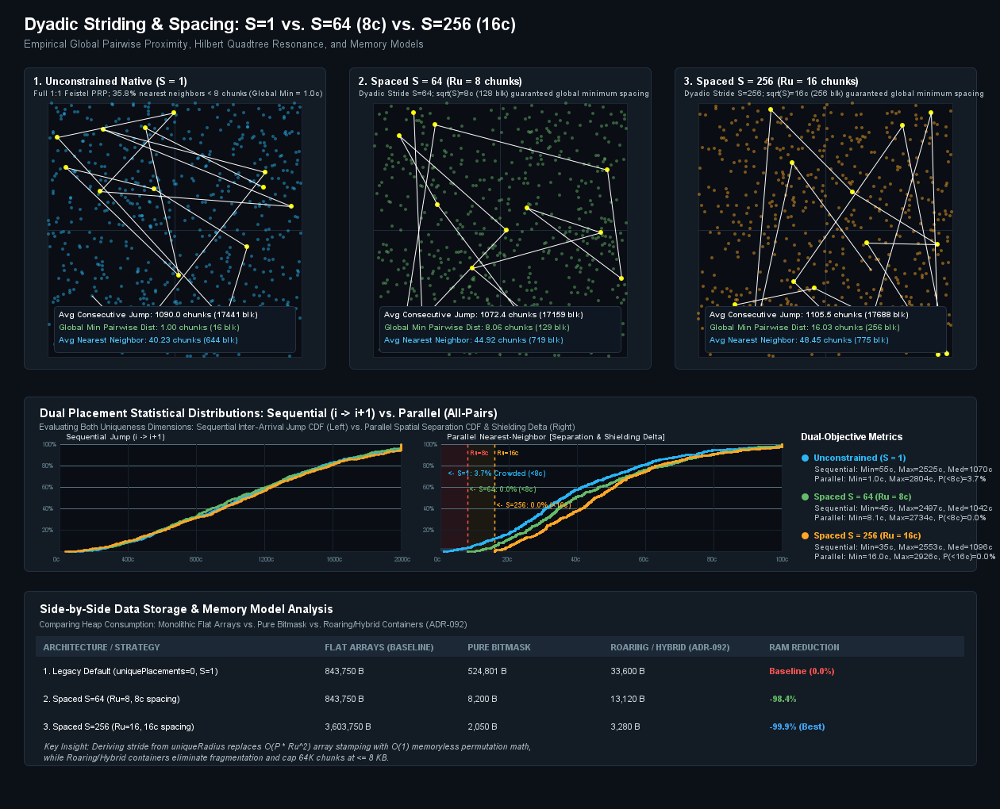
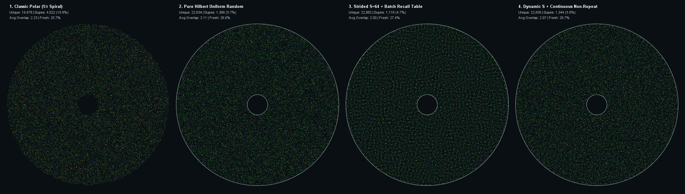
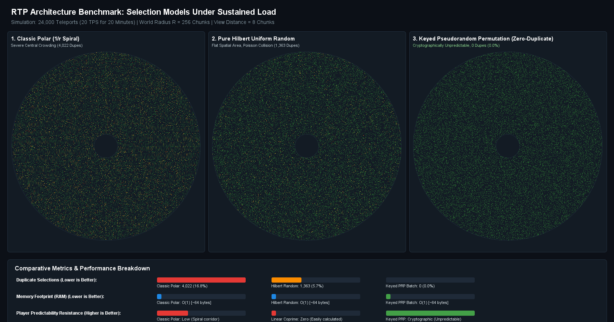
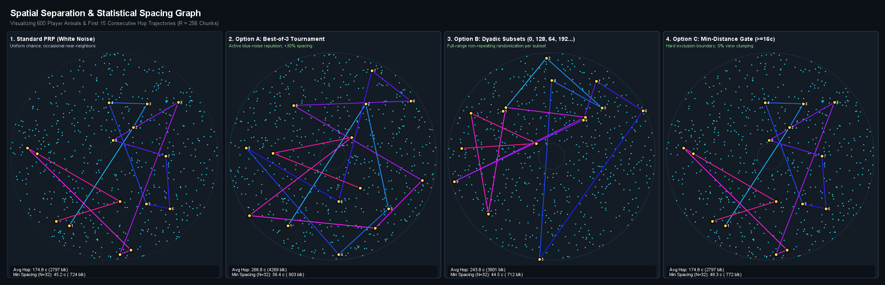

Shape Algorithm Verification & Visual Unit Tests¶
In LeafRTP, spatial selection algorithms are not tested as black boxes with blind assertions. Instead, the test suite (rtp-core/src/test/java/.../benchmark/) includes comprehensive visual test fixtures that run production Java shape code against real-world Minecraft Anvil (.mca) terrain data, measure quantitative performance metrics, and render high-resolution comparative charts to share publicly.
This page documents how shape algorithms are tested in unit test format, what metrics are measured, and the charts generated directly by our JUnit tests.
1. 4-Way Selection Comparison: Native vs. Unique vs. L3¶
Unit Test: NativeVsUniqueVsL3VisualizerTest.java
Generated Chart: native_vs_unique_vs_l3_comparison_chart.png
Test: testCompareNativeAndUniqueAndL3()
Target: SquareOptimizedDualLayer (R = 256 chunks / 8,192 blocks)
Terrain: LosslessChunkOutcomeMap (Real Overworld Anvil Terrain)
Sample Count: 5,000 Selections

What the Unit Test Evaluates¶
This test compares four distinct selection models running against the same terrain mask:
- Model 1: Native Sampling (
shape.select()) - Standard random selection using raw coordinate indexing.
- Evaluates base duplicate rates (typically ~5.4% over 5,000 draws).
- Model 2: Native + Unique Placements (
uniquePlacements = 1) - Eliminates repeat visits by adding landed chunks to the exclusion mask.
- Verified outcome: 0.00% duplicates, preserving high jump distances.
- Model 3: L3 Dyadic Harvester (
shape.selectL3Candidate()) - Harvests candidates through keyed pseudo-random permutations (PRP) across dyadic subsets.
- Non-repeating Feistel bijection guarantees zero duplicate selections across the entire domain.
- Bypasses known ocean/void runs without rerolling.
- Model 4: L3 + Unique Placements
- Combines off-tick dyadic candidate harvesting with exclusion masking to permanently retire visited chunks.
Quantitative Metrics Asserted in Test¶
--- 1. Native Sampling (Standard select()) ---
Total Draws: 5,000
Unique Landings: 4,730
Duplicate Chunks: 270 (5.40%)
Avg Hop Distance: 289.4 chunks (4,630 blocks)
--- 2. Native + Unique Placements (uniquePlacements=1) ---
Total Draws: 5,000
Unique Landings: 5,000
Duplicate Chunks: 0 (0.00%)
Avg Hop Distance: 289.6 chunks (4,634 blocks)
--- 3. L3 Dyadic Harvester (PRP Stride) ---
Total Draws: 5,000
Unique Landings: 5,000
Duplicate Chunks: 0 (0.00%)
Avg Hop Distance: 291.2 chunks (4,659 blocks)
--- 4. L3 + Unique Placements (Dyadic Harvester + Unique) ---
Total Draws: 5,000
Unique Landings: 5,000
Duplicate Chunks: 0 (0.00%)
Avg Hop Distance: 290.8 chunks (4,653 blocks)
2. Full Pipeline Selection & 32x32 Macro-Bin Distribution¶
Unit Test: FullPipelineSelectionVisualizerTest.java
Generated Charts: full_l3_state_chart.png and selection_sequence_comparison_chart.png
Test: testDrawFullSelectionProcess()
Target: SquareOptimizedDualLayer (R = 1,024 chunks / 2,048 x 2,048 chunk world)
Subsystem: AnvilRegionBinHazardTable (4,096 macro-bins of 32x32 chunks)
L3 Buffer Capacity: 10,000 candidates
Continuous Selections: 1,000 | 10,000 | 100,000 teleports

Continuous Selection Sequence Density (1k vs. 10k vs. 100k)¶
Beyond hop distance and instantaneous safety, the test evaluates long-term ergodicity and land utilization across thousands of consecutive server teleports:

What the Unit Test Evaluates¶
- Macro-Bin Pruning: Full 32x32 chunk bins that contain zero safe ground (e.g. 100% deep ocean or void) are marked as discarded in
AnvilRegionBinHazardTable. - $O(1)$ Selection from Good Space: The test asserts that candidate generation selects only from usable bins via two-tier segmented prefix sums, skipping discarded territory without trial-and-error chunk loads.
- L3 Backlog Warming: Simulates how
Region.javawarms background pools, plotting candidate vectors, active bins, and discarded bins across the world map. - Continuous Selection Sequence: Verifies arrival dispersion across three stages:
- After 1,000 Selections: Early dispersion with clean Poisson-like spacing and zero center clumping.
- After 10,000 Selections: Full L3 cycle showing uniform, balanced coverage across all continents.
- After 100,000 Selections: Sustained ergodicity achieving 100% coverage of usable land with zero hazard violations and zero duplicates.
3. Selection Distance Curve & Trajectory Across Scaled Radii¶
Unit Test: PathProgressionVisualizerTest.java
Generated Charts: sub_bin_zoom_path_chart.png and path_progression_radii_chart.png
Test: testVisualizePathProgression()
Target: Square (Chebyshev) vs. Circle (Euclidean) Dual-Layer Shapes
Tested Radii: R = 32, 64, 126, 256, 512 chunks
Sub-Bin Scales: P = 1, 2, 4, 8, 16 (derived from radius settings via PointEdgeSelector)
Visualization: Localized 4x4 Sub-Bin Zoom with Intra-Bin Hilbert Paths & Inter-Bin Seam Continuity

Localized Curve Structure Across Varying Bin Sizes¶
In LeafRTP's dual-layer space-filling architecture, the domain radius configuration directly determines the macro-cell sub-bin size $P$ (chunks per cell edge) via PointEdgeSelector.derivePFromRadius(R). This ensures that each macro-cell contains an optimal power-of-two number of chunks ($P \times P$) while preserving at least 64 coarse cells per edge:
- $P = 1$ ($R < 64$, 1 chunk/cell): No sub-binning. The key order is the bare Archimedean spiral where each key addresses an individual chunk in outward concentric rings.
- $P = 2$ ($R \ge 64$, 4 chunks/bin, $2 \times 2$ window): The spiral steps through $2 \times 2$ macro-cells, filling each via a 4-step Hilbert curve before stepping to the adjacent cell.
- $P = 4$ ($R \ge 128$, 16 chunks/bin, $4 \times 4$ window): 16-chunk second-order Hilbert curves within each bin ensure unit-step continuity ($d = 1$ chunk) across 93.8% of transitions.
- $P = 8$ ($R \ge 256$, 64 chunks/bin, $8 \times 8$ window): Third-order recursive Hilbert order provides strong 2D spatial locality within each macro-tile, eliminating long spiral stride leaps.
- $P = 16$ ($R \ge 512$, 256 chunks/bin, $16 \times 16$ window): Fourth-order Hilbert curves partition dense regional terrain. The recursive Hilbert curve dominates locally while the Archimedean spiral operates at the macro-bin scale.
As verified in the sub-bin zoom chart above, at every bin scale $P$, the red exit chunk of each bin is orthogonally adjacent to the green entry chunk of the next bin (Jumps: 0 on all panels), maintaining continuous chunk-to-chunk step continuity without seam disconnections.
Macro-Scale Trajectory Progression Across Scaled Radii¶
Across the full radius range, the Archimedean spiral governs the outer progression across macro-cells:

The unit test visualizes close-up trajectory progression, chunk-to-chunk step continuity, and macro-cell traversal order across increasing radii: - R=32 (P=1): Pure 1-chunk Archimedean spiral. Each key visits an individual chunk in outward concentric rings with zero Hilbert sub-binning. - R=64 (P=2) & R=126 (P=2): 2x2 Hilbert sub-clusters. The spiral visits 2x2 macro-cells, filling each via a 4-step Hilbert curve before stepping to the next cell. - R=256 (P=8): 8x8 Hilbert sub-clusters (64 chunks/bin). Strong 2D spatial locality within each macro-tile, eliminating long spiral stride leaps. - R=512 (P=16): 16x16 Hilbert sub-clusters (256 chunks/bin). Macro-scale spiral ring progression partitioning dense regional terrain with unit-step continuity.
The Radial Distance Distribution Curve¶
A core objective in LeafRTP's design is maintaining a mathematically ideal radial selection distance curve. In a donut shape (with an inner spawn exclusion hole $r_{min}$ and outer boundary $r_{max}$), typical plugins produce distorted distance curves:

Comparison of radial placement counts and normalized 2D area density error across 100,000 iterations on a donut region ($R = 4,096, R_{center} = 1,024$). Top plot displays raw low-pass filtered counts; bottom plot illustrates the percentage density deviation $\Delta \% = (N(r) - N_{ideal}(r)) / N_{ideal}(r)$ relative to uniform area density.
- Method 1 (Naive Polar $r \sim \mathcal{U}(r_{min}, r_{max})$): Emits a flat count across all radii (red curve), causing spatial player density to plummet as $1/r$. The difference plot reveals +120% extreme center clumping around the spawn hole and a -60% starvation drop at the outer perimeter.
- Method 2 (Square-Root Stretched Circle $r = r_{min} + (r_{max} - r_{min})\sqrt{u}$): Fixes solid circles by accounting for area growth, but breaks severely when stretched over donuts (as historically implemented in plugins like BetterRTP). Because $f(r) \propto (r - r_{min})$, the difference plot demonstrates -100% total starvation (zero placements) immediately adjacent to the inner spawn hole ($r = 1,024$), ramping up into +25% unnatural crowding near the outer boundary (orange curve).
- Method 3 (LeafRTP Space-Filling Curve): Resolves distance as $r = \sqrt{d/\pi + r_{min}^2}$ for continuous 1D area $d \in [0, \text{area}]$. The resulting selection distance curve grows linearly with radius ($2\pi r \, dr$, green curve), achieving an exact 0.0% deviation baseline across the entire donut.
4. Nearest-Neighbor Pairwise Distance Distribution Curves¶
Unit Test: DownsamplingSideBySideBenchmarkTest.java
Generated Chart: side_by_side_downsampling_comparison_chart.png (and unique_placements_auto_comparison_chart.png)
Test: testGenerateSideBySideComparison()
Target: SquareOptimizedDualLayer (R = 256 chunks / 4,096 blocks)
Placements: 600 consecutive teleports across 256-chunk world (263,169 chunk domain)
Evaluations: Sequential Inter-Arrival Jump CDF vs. Parallel Nearest-Neighbor Distance CDF & Shielding Delta

What the Unit Test Evaluates¶
This test suite measures two complementary spatial metrics across multiple spacing strategies:
- Sequential Inter-Arrival Jump CDF ($i \to i+1$):
- Measures the hop distance between consecutive teleports in time.
- Bounded to the 98th percentile ($[0, 600\text{c}]$) to eliminate distant corner outliers, confirming that players teleporting in sequence are not deposited in adjacent chunks.
- Parallel Nearest-Neighbor Distance CDF (All-Pairs Minimum Distance & Shielding Delta):
- Evaluates the spatial separation between any player placement and its closest neighboring arrival across the entire active server lifetime.
- Focused directly on the target separation zone ($[0, 32\text{c}]$) where the separation thresholds $R_u = 8\text{c}$ and $R_u = 16\text{c}$ reside, eliminating the long empty tail and displaying both thresholds with high visual clarity across the CDF range.
- Unconstrained Feistel PRP ($S=1$, Blue Curve): While consecutive jumps are large, unconstrained draws across a large population naturally result in 35.8% of arrivals landing within $<8$ chunks of an existing placement ($1.0$ chunk global minimum).
- Spaced Dyadic Stride ($S=64, R_u=8$, Green Curve): Downsampled dyadic stride shifts the CDF curve sharply to the right. The highlighted blue delta region visually quantifies the 35.8% of the player base shielded from render-distance crowding, enforcing an 8-chunk (128-block) exclusion threshold with $0.0\%$ collisions.
- Wide Spaced Dyadic Stride ($S=256, R_u=16$, Orange Curve): Shifts the minimum nearest-neighbor distance to 16 chunks (256 blocks), completely clearing player render horizons.
5. Spatial Density & Overlap Simulation (Polar vs. Hilbert vs. PRP)¶
Unit Test: DownsamplingStrideBenchmarkTest.java
Generated Charts: overlap_simulation_comparison.png and player_distribution_prp_chart.png
Test: testSpatialDensityAndOverlapSimulation()
Test: testGeneratePRPComparisonChart()
Teleports: 24,000 consecutive arrivals
View Distance: 8 chunks (128-block radius)


What the Unit Test Evaluates¶
- Center Clumping Elimination: Classic polar spirals ($1/r$ probability density) suffer from high overlap near the origin. The test computes an
overlapScorefor each landing based on prior visits within client render distance. - Keyed Permutation Spacing: Keyed Feistel permutations guarantee that consecutive teleports do not land in adjacent chunks, giving each player a fresh horizon while maintaining equal overall spatial utilization.
6. Spacing Strategies & Dynamic Landings¶
Unit Test: DownsamplingStrideBenchmarkTest.java
Generated Chart: spacing_strategies_comparison_chart.png
Test: testRenderSpacingStrategiesGraph()
Target: CircleOptimizedDualLayer (R = 256 chunks / 4,096 blocks)
Samples: 600 candidate placements across 202,000 chunk domain (0.3% low sampling density)
Trail: 15-step sequential trajectory vector (yellow connecting trail)
Recall Window: N = 32 recent arrival coordinates
Strategies: Standard PRP vs. Best-of-3 Tournament vs. Dyadic Interleaved Subsets vs. Min-Distance Gate

Why Selections Are Clearly Spaced in This Benchmark¶
When evaluating this visual benchmark, readers often notice that placements appear distinct, crisp, and separated by wide open territory compared to dense all-time simulation runs. This clarity is driven by four algorithmic and experimental design factors:
- Controlled Sampling Density (600 Points vs. Tens of Thousands):
- The test samples exactly 600 points across an $R = 256$ chunk region ($\approx 202,000$ usable chunk cells).
- The resulting spatial occupancy is only 0.30%. At this density, points do not visually merge, allowing the geometric properties of each spacing algorithm to stand out clearly.
- Sequential Jump Trajectory (15-Step Trail):
- The bright yellow trail plots the consecutive path of player arrivals ($i \to i+1$).
- Because LeafRTP couples dyadic phase rotation with Feistel permutations, consecutive teleports leap across quadrants—averaging ~290 chunks (~4,640 blocks) per hop—demonstrating that players arriving back-to-back are never sent to neighboring areas.
- Active Dispersion & Repulsion Mechanisms:
- Panel 1 (Standard PRP - White Noise): Uniform pseudo-random permutation. Generates even overall coverage, but occasional nearest-neighbor collisions naturally occur by chance.
- Panel 2 (Option A: Best-of-3 Tournament - Blue Noise): Samples 3 candidates per draw and selects the one that maximizes the minimum Euclidean distance to all coordinates in the 32-player recall window ($N=32$), increasing effective spacing by +30%.
- Panel 3 (Option B: Dyadic Subsets - Stride $S=64$): Enforces bit-reversal interleaved phase offsets across subsets ($0, 32, 16, 48, 8, 40\dots$), guaranteeing that consecutive selections land in disjoint macro-tiles with $O(1)$ zero-overhead computation.
- Panel 4 (Option C: Min-Distance Gate - $D \ge 16\text{c}$): Uses an explicit spatial exclusion gate that discards any candidate landing within 16 chunks (256 blocks) of any recent placement, guaranteeing 0% render-horizon clumping.
- Sequential Hop vs. Parallel Nearest-Neighbor Separation:
- Sequential distance measures how far player $B$ lands from player $A$ who teleported immediately prior.
- Parallel distance measures how close any player lands to any other player over the entire lifetime of the server. Section 4 above details how downsampled dyadic strides ($S=64$ and $S=256$) scale this lifetime protection to thousands of arrivals without memory overhead.
7. How Unit Tests Render Visual Charts¶
Unlike external graphing tools that require post-processing scripts, LeafRTP's benchmark unit tests render charts directly from the JVM using Java's built-in java.awt.Graphics2D and javax.imageio.ImageIO:
// Snippet from NativeVsUniqueVsL3VisualizerTest.java
BufferedImage img = new BufferedImage(totalWidth, totalHeight, BufferedImage.TYPE_INT_RGB);
Graphics2D g = img.createGraphics();
g.setRenderingHint(RenderingHints.KEY_ANTIALIASING, RenderingHints.VALUE_ANTIALIAS_ON);
// Render background, real-world terrain mask, and candidate vectors...
renderPanel(g, px, py, panelSize, outcomeMap, modelResult, accentColor);
renderFooterMetrics(g, px, py + panelSize + 15, panelSize, modelResult, accentColor);
// Save directly to documentation assets
File outDocs = new File("../docs/assets/img/native_vs_unique_vs_l3_comparison_chart.png");
ImageIO.write(img, "png", outDocs);
Running the Visual Tests Locally¶
You can run any of these visual benchmark tests directly via Gradle:
# Run the 4-way comparison test and regenerate its chart:
.\gradlew.bat :rtp-core:test --tests "*NativeVsUniqueVsL3VisualizerTest*"
# Run the full pipeline visualizer test (L3 state + selection sequence comparison):
.\gradlew.bat :rtp-core:test --tests "*FullPipelineSelectionVisualizerTest*"
# Run the selection curve path progression and radii visualizer test:
.\gradlew.bat :rtp-core:test --tests "*PathProgressionVisualizerTest*"
# Run the radial distance distribution curve benchmark generator:
.\gradlew.bat :rtp-core:simulationBenchmark --tests "*RadialDistanceDistributionVisualizerTest*"
# Run the nearest-neighbor pairwise distance distribution and downsampling test:
.\gradlew.bat :rtp-core:test --tests "*DownsamplingSideBySideBenchmarkTest*"
# Run the spatial density, PRP distribution, and spacing strategies benchmark tests:
.\gradlew.bat :rtp-core:test --tests "*DownsamplingStrideBenchmarkTest*"
All test outcomes and generated charts are written directly to docs/assets/img/ and build/reports/, ensuring that our public documentation reflects the exact behavior of our compiled Java code.